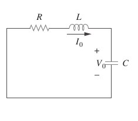

Selecione o tipo de circuito desejado:
RLC série
RLC paralelo
RLC misto

Circuito RLC em série
Resistência (\( \Omega \)):
Capacitância (\( F \)) :
Indutância (\( H \)):
(Corrente inicial no indutor) \(i _{_0} = \)
(Tensão inicial no capacitor) \(v _{_0} = \)
(Fonte conectada em \(t = 0\) ) \(V _s \)
Resposta Natural:
Frequência de Neper: \( \alpha \) =
Frequência ressonante: \( \omega _0\)=
Tipo de Amortecimento: